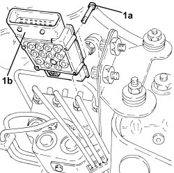

3340A20 ABS ELECTRONIC CONTROL UNIT - R+R
- Path
- Procedures > 33 BRAKES > 3340 ANTI-LOCK BRAKING SYSTEM (ABS) > 3340A ABS CHECK/ADJUSTMENT DEVICES > 3340A20 ABS ELECTRONIC CONTROL UNIT - R+R
- Kind
- repair procedure (removal / refitting; the operation number is the code)
- Applies to
- all engines; all production periods
- Interactive page
- https://sloeber94.github.io/elrnDB-aBrrSpdr/en/#/946002141
Applies to: all engines; all production periods
 Removing
Removing
 Refitting
Refitting- Make sure that the ignition key is in the OFF position, then disconnect the battery terminal (-).
- Disconnect the electrical connection for the A.B.S. control unit.
1. Undo the bolts (1a) and remove the A.B.S. control unit (1b).

Applies to: all engines; all production periods
Refitting
Removing- Place the A.B.S. electronic control unit back in its housing and tighten the bolts.
- Connect the electrical connection to the A.B.S. electronic control unit.
- Connect the negative battery terminal.
Topics that link to this page (16)
- Y097 U1706 - CAN (NCM - NFR)
- 1060GK CHECK CONTROL UNIT SOFTWARE AND HARDWARE
- E1050 CAN CONNECTION LINES - WIRING DIAGRAM
- E1050 CAN CONNECTION LINES - COMPONENT LOCATION
- E1050 CAN CONNECTION LINES - WIRING DIAGRAM
- E1050 CAN CONNECTION LINES - COMPONENT LOCATION
- E4010 INSTRUMENT PANEL - WIRING DIAGRAM
- E4010 INSTRUMENT PANEL - COMPONENT LOCATION
- E4010 INSTRUMENT PANEL - WIRING DIAGRAM
- E4010 INSTRUMENT PANEL - COMPONENT LOCATION
- E4080 TRIP COMPUTER - WIRING DIAGRAM
- E4080 TRIP COMPUTER - COMPONENT LOCATION
- E7022 VDC - WIRING DIAGRAM
- E7022 VDC - COMPONENT LOCATION
- E8010 MULTIPLE DIAGNOSTIC CONNECTOR - WIRING DIAGRAM
- E8010 MULTIPLE DIAGNOSTIC CONNECTOR - COMPONENT LOCATION